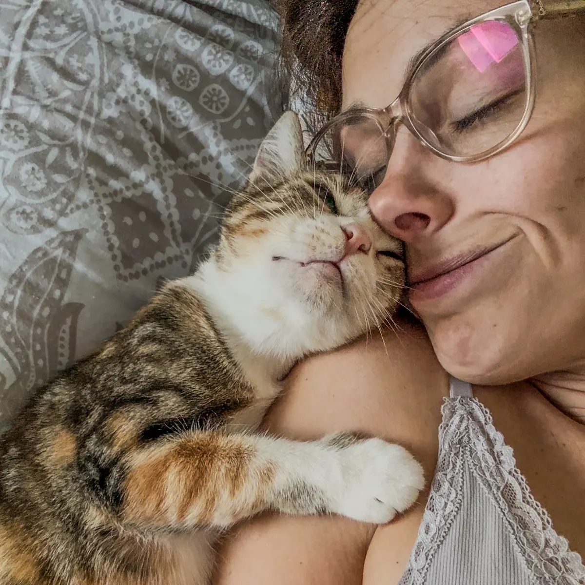

Les 10 idées reçues sur le chat, passées au crible
« Un chat qui ronronne est content. » La phrase paraît évidente. Elle ne résiste pas au premier chiffre.
Dix croyances, confrontées aux travaux qui les ont testées. Certaines s'effondrent. D'autres tiennent, mais pas pour la raison qu'on imagine.
1. « Un chat qui ronronne est content »
Votre chat ronronne sur vos genoux, et vous en concluez qu'il est bien. Il l'est peut-être.
Seulement il ronronne aussi ailleurs. Sur la table du vétérinaire, par exemple, où personne ne dirait qu'il passe un bon moment.
Ces deux situations ont été étudiées. Ce qu'on y trouve n'a rien à voir.
Ces chiffres de consultation n'ont pas été récoltés pour décrire l'humeur du chat. Ils existent parce que le ronronnement couvre les bruits du cœur, et qu'un vétérinaire qui n'entend plus rien finit par chercher comment le faire taire.
Et un chat sur une table d'examen n'est pas un chat détendu. Vous le savez si vous y avez déjà porté le vôtre.
Le ronronnement accompagne donc aussi des moments qui n'ont rien d'agréable.
Le petit cri, lui, dit quelque chose. Quand on l'efface par ordinateur, le même enregistrement cesse d'être perçu comme pressant.
Un chat ne ronronne donc pas d'une seule manière. Il glisse un cri dans son ronronnement quand il veut quelque chose.
Le ronronnement se lit avec le reste : la posture, les oreilles, les pupilles.
Un ronronnement ne dit rien de son humeur, ni de sa santé.
2. « Un chat voit dans le noir »
Vous l'avez vu traverser le salon éteint sans rien renverser, et vous avez vu ses yeux renvoyer la lumière de votre téléphone. Les deux observations sont justes. L'explication qu'on en donne, elle, ne l'est pas.
Pour le mesurer, des chercheurs ont appris à des chats à repérer un panneau lumineux, puis ont baissé la lumière jusqu'à ce qu'ils se trompent. Deux humains ont passé le même test, dans les mêmes conditions.5
Le chat repère une lumière près de 6 fois plus faible que celle qu'il nous faut, à nous. C'est de là que vient le « six fois mieux » qu'on lit partout, et c'est juste.
Ce que les relais oublient, c'est la suite. Sa rétine n'est pas forcément meilleure que la nôtre : c'est l'œil autour qui change tout.
Le trajet de la lumière dans l'œil du chat
La lumière qui entreLa même lumière, renvoyée par le miroirLa rétineLe tapetum, le miroir du fond de l'œil
Sa pupille s'ouvre bien plus grand que la nôtre : il entre donc davantage de lumière. Cette lumière traverse la rétine sans être entièrement captée au passage, et chez nous, ce qui n'a pas été capté est perdu.
Chez lui, un miroir le renvoie. Le tapetum lucidum fait repasser la lumière sur les mêmes cellules, qui ont une seconde chance de l'attraper. Le peu qui ressort ensuite de l'œil, c'est le reflet que vous voyez sur vos photos.
Le chat n'a donc pas un meilleur capteur. Il a un meilleur objectif.
L'expérimentateur était resté dans le noir aussi longtemps que ses chats. Il ne voyait plus le panneau. Eux répondaient encore, sans se tromper.
Dans le noir complet, il se déplace avec ses moustaches, ses oreilles, et une mémoire des lieux que nous n'avons pas.
Il lui faut 6 fois moins de lumière que nous. Pas zéro.
3. « Un chat roux est câlin, un tricolore caractériel »
Chacun a connu un roux collant. Un souvenir marquant se généralise vite quand rien ne vient le contredire.
Cette croyance a été étudiée. Ce qui a été mesuré, ce n'est pas le chat : c'est nous.
Des chercheurs ont demandé à 189 personnes de noter 5 robes sur 10 qualificatifs de caractère : amical, distant, timide, têtu, et six autres.6
Ce que 189 personnes prêtent au chat selon sa robe
Couleur
Caractère attribué
Roux
Amical
Tricolore
Intolérant, distant
Blanc
Distant, timide, calme, peu actif
Noir, bicolore
Aucun trait ne ressort

Le tableau dit que la tricolore est distante. Méli ne l'a pas lu.
Un des 10 qualificatifs fait exception : « têtu ». Aucune robe ne ressort comme plus têtue qu'une autre.
Et la réputation du roux change selon l'endroit où on regarde. L'étude lui donne « amical ». Sur Instagram, c'est devenu celui qui fait le plus de bêtises.
Amical ici, ingérable ailleurs, têtu nulle part. On prête bien un caractère à une couleur, mais pas toujours le même.
Reste la vraie question : et du côté du chat ?
Une revue récente a repris tous les travaux qui ont cherché ce lien.7 Les résultats se contredisent d'une étude à l'autre, et surtout : aucune n'a regardé les gènes des chats. On a comparé des robes vues à l'œil, alors que la couleur dépend d'au moins 10 gènes, dont certains masquent les autres.
Aucun lien n'a été établi. Ça ne veut pas dire qu'on a prouvé le contraire : la façon de chercher ne permettait ni de le trouver, ni de l'exclure.
Et les chats noirs, en refuge ?
C'est le seul endroit où la couleur d'un chat pourrait lui coûter quelque chose. La croyance y est si répandue qu'elle a reçu un nom dans la littérature : le biais du chat noir.
Une étude a suivi près de 8 000 chats passés par un refuge municipal américain, et comparé ce qu'ils sont devenus selon leur robe.8
Le lien existe, statistiquement. Mais il est si faible qu'il n'explique presque rien de ce qui arrive au chat : sa couleur ne décide pas de son sort.
Les auteurs en tirent une conclusion mesurée : c'est assez pour donner un coup de pouce aux chats noirs à l'adoption, pas pour croire que leur robe les condamne.
Devant une cage, la robe se voit tout de suite. Le caractère demande de s'asseoir et d'attendre.
Et les refuges et les associations débordent de chats. Ils sont tous beaux à leur façon, ces petits amours.
La robe n'annonce aucun caractère. Elle dit ce que 189 personnes ont cru voir.
4. « Il fait exprès ! »
Vous avez déplacé le bac pour faire de la place, ou changé de marque de litière. Quelques jours plus tard, il y a une flaque sur le paillasson.
L'explication qui vient à l'esprit est presque toujours la même : il n'a pas apprécié, et il le fait exprès.
C'est l'idée reçue la plus coûteuse de la liste, parce que c'est la seule qui change ce que vous allez faire dans les cinq minutes qui suivent.
Sur ce point, les vétérinaires ont tranché. Ils le disent en une phrase.
Ce comportement n'est pas dû à la rancune ni à la colère contre le propriétaire, mais au fait qu'un besoin physique, social ou médical n'est pas satisfait.9
Entre le changement que vous avez vu et la flaque que vous avez trouvée, il manque deux étapes.
1
Quelque chose change
Un bac déplacé, une litière changée, un meuble en moins, un chat de plus dans la maison.
2
Un besoin passe à la trappe
Il a mal, il a peur, ou il n'accède plus tranquillement à son bac. Ça, vous ne le voyez pas.
3
Il élimine ailleurs
C'est la seule étape que vous voyez.
L'étape 2 est invisible, et c'est exactement à cet endroit que l'histoire de la vengeance vient se loger.
Un chat ressent. La peur, la douleur, la faim, le soulagement, l'attachement : rien de tout ça n'est en question.
Ce qu'on ajoute par-dessus, c'est un raisonnement. Il aurait jugé le changement, décidé qu'il était injuste, et choisi la sanction. La vengeance, la jalousie et la malveillance sont des intentions d'humain : elles supposent qu'il se représente l'effet que la flaque va vous faire.
L'anthropomorphisme ne commence pas aux émotions. Il commence au scénario qu'on écrit autour.
Et ce scénario a des conséquences, parce qu'il désigne une réponse. Si la flaque est une vengeance, on punit, ou on laisse courir en se disant que ça finira par lui passer.
Le même texte est direct sur la punition. Elle mène à de l'agressivité par peur, et elle abîme presque toujours le lien entre le chat et son humain. Sur le marquage, elle ne fait qu'augmenter le stress, donc la motivation à marquer.
Punir ne rate pas seulement sa cible. Ça aggrave.
Laisser courir coûte autre chose : du temps. La démarche recommandée commence par le vétérinaire, parce que la liste des causes s'ouvre sur les causes médicales, puis sur une inflammation de la vessie dont on ne trouve pas la cause. Ensuite seulement viennent le bac, son emplacement, la litière et la cohabitation.
Ce qui est vrai, c'est le déclencheur : un changement dans la maison précède souvent l'accident. Ce qui est faux, c'est l'intention qu'on ajoute par-dessus.
Votre chat ne vous punit pas. Il vous signale que quelque chose ne va pas, avec le seul vocabulaire dont il dispose.
Faux, et punir aggrave.
5. « Un chat est un animal solitaire »
Si vous avez deux chats, vous connaissez la scène. L'un fixe l'autre depuis le haut de l'escalier, l'autre fait un détour par la cuisine, et vous vous demandez s'ils se supportent.
La croyance vient de loin, et elle n'est pas absurde. Le chat domestique descend d'un chat sauvage territorial, qui chasse seul et ne forme pas de groupes. Il s'est domestiqué lui-même, en s'approchant des greniers.
Mais entre « il peut vivre seul » et « il préfère être seul », il y a tout l'écart. Les chercheurs disent du chat qu'il est facultativement social10 : les deux lui sont possibles, et ce qui tranche, c'est ce qu'il a connu petit et ce dont il dispose chez vous.
Pour savoir à quoi ressemble vraiment une cohabitation, il a fallu compter. Une enquête a relevé, jour après jour, les gestes d'entente et les gestes de friction dans 2 492 foyers américains à plusieurs chats.11
Ce que font des chats qui vivent ensemble, au moins une fois par jour
2 492 foyers américains de 2 à 4 chats, enquête déclarative, 2020
Dormir dans la même pièce87,8 %
Se toucher le nez54,8 %
Se lécher la tête51,2 %
Se fixer du regard44,9 %
Se poursuivre44,0 %
Feuler18,0 %
Hurler5,2 %
Signes d'ententeSignes de friction
Étude financée par un fabricant de phéromones apaisantes pour chats.11
Regardez le haut du graphique. Les gestes les plus fréquents, et de loin, sont des gestes d'entente.
Ce qui vous inquiète, le regard fixe et la poursuite, arrive juste après. C'est fréquent, et c'est surtout ce qui se voit.
Ce qui ressemble vraiment à une bagarre, lui, s'effondre en bas du graphique. Hurler, 7 foyers sur 10 ne l'entendent jamais.
Autrement dit, ce que vous prenez pour de l'hostilité est le plus souvent de la tension basse, celle qui ne dégénère jamais.
Dans 73,3 % des foyers, les signes de conflit sont apparus dès le premier jour de la présentation. Si ça s'est mal passé chez vous le premier soir, vous êtes dans la majorité.
Est-ce qu'il est malheureux tout seul, et faut-il en prendre un deuxième ?
La réponse honnête commence par un aveu. La science ne sait pas.
Une revue systématique a repris 15 études qui ont cherché un lien entre le nombre de chats d'un foyer et leur bien-être.12 Les résultats partent dans tous les sens : certaines trouvent un effet, d'autres l'inverse, d'autres rien du tout. L'hormone du stress, mesurée dans leurs urines, ne bouge pas avec le nombre de chats.
Personne ne peut donc vous dire « prenez-en un deuxième, il sera plus heureux ». Ni l'inverse.
Ni « il est solitaire », ni « il lui faut un copain », ni « à plusieurs il est stressé ». La première est démentie, les deux autres ne sont pas démontrées, et les trois se disent avec le même aplomb.
Ce qui se sait, c'est qu'il n'y a pas de réponse valable pour tous les chats. Elle dépend du vôtre. Et elle dépend tout autant du deuxième.
Et le conseil habituel demande à être nuancé lui aussi : l'enquête sur les 2 492 foyers a testé si fournir assez de ressources prédisait l'entente entre les chats, et ça ne la prédit pas, pas plus que la taille du logement.
Compter les gamelles ne suffit donc pas. Ce qui pèse, d'après la revue, c'est l'espace dont chacun dispose, l'endroit où vous posez les ressources, le lien de parenté entre vos chats et ce qu'ils ont vécu avant d'arriver.
Je vis avec 6 chats. J'ai accueilli des portées de chatons en famille d'accueil, et des chats de tous âges et de tous caractères.
Si la cohabitation tient chez moi, c'est parce que j'y travaille. Et il m'est arrivé de tout essayer, et que ça rate quand même, au moins en partie : un chat qui monte en stress. Souvent Vassily, qui tient à sa tranquillité.
Je n'ai pas toujours tout anticipé non plus. Quand j'ai ramené Méli de Corfou, je n'ai pas passé des semaines à calculer l'effet qu'elle aurait sur les chats déjà là. Elle m'avait choisie, et j'ai décidé de l'intégrer : en sachant qu'il faudrait faire un vrai travail d'intégration derrière.
La cohabitation m'intéresse particulièrement. J'en ferai ma spécialité quand je proposerai des consultations.
Les conditions se travaillent : l'espace, l'emplacement des ressources, le rythme auquel on fait les présentations. Les méthodes, elles, ne tiennent pas en un paragraphe et méritent leur propre article.
Alors avant d'en prendre un deuxième, la question utile n'est pas de savoir si le vôtre s'ennuie. C'est de savoir si ce chat-là, avec son caractère et ce qu'il a déjà vécu, supportera d'en voir un autre chez lui.
Il peut vivre seul, il peut vivre à plusieurs. Ça dépend du chat.
6. « Un chat ne demande rien »
C'est une des premières raisons qu'on se donne pour choisir un chat plutôt qu'un chien, et elle est en partie vraie : personne ne vous attend devant la porte à 7 heures du matin, et il n'y a pas de sortie à faire sous la pluie.
Le glissement se fait tout seul. De « il demande moins » on passe à « il ne demande rien », et on arrête de chercher.
Sauf qu'il demande. Ce qu'il demande ne se voit simplement pas quand ça manque.
Un texte de référence liste ce dont un chat a besoin dans une maison.13
un endroit sûr où se réfugier, où personne ne vient le chercher ;
de quoi manger, boire, se coucher et faire ses besoins, à des endroits différents ;
la possibilité de chasser pour de faux, tous les jours ;
une relation humaine prévisible ;
une maison qui respecte son odorat.
Aucun de ces cinq besoins ne se règle par un achat. Aucun ne se voit non plus le jour où il n'est pas satisfait.
Une enquête américaine a mesuré ce que les foyers offrent vraiment.14 Ne lisez pas les chiffres un par un : c'est l'ordre qui raconte quelque chose.
Ce que les foyers offrent réellement à leur chat
547 propriétaires américains, panel en ligne, 2019
Une cachette au calme92,1 %
Des caresses tous les jours87,2 %
Des jouets pour jouer seul81,3 %
Un perchoir avec vue79,0 %
Un couchage à lui75,9 %
Un griffoir68,7 %
Un arbre à chat51,7 %
Du jeu tous les jours47,7 %
De l'éducation30,7 %
Ce à quoi on penseCe à quoi on ne pense pas
Ce qui manque n'est pas une question d'argent. Ce n'est même pas une question de temps : caresser son chat en demande tous les jours, et presque 9 foyers sur 10 le font.
Les deux choses qui manquent sont les deux qu'il faut avoir apprises. Jouer pour de vrai avec un chat, ça s'apprend. Lui apprendre quelque chose aussi.
Ça ne dit pas que les gens font mal. Ça dit que personne ne le leur a montré.
10 minutes de jeu ne se voient nulle part, et ne se rattrapent pas le week-end.
Le matériel a sa place, en complément et pas en remplacement. Je détaille ailleurs celui que j'utilise, avec ce que j'en pense après m'en être servie : ma sélection, objet par objet.
Mais un chat peut très bien passer un excellent moment avec un carton. Ce qui lui manque, quand quelque chose lui manque, c'est rarement l'objet.
C'est quelqu'un qui s'assoit par terre avec lui. Quelqu'un qui remarque qu'il boit plus qu'avant, ou qu'il ne monte plus sur le meuble où il montait tous les jours.
Et une partie de ce temps peut servir à autre chose qu'au jeu, parce qu'un chat refait ce qui lui a rapporté quelque chose. C'est l'idée reçue suivante.
Il demande du temps tous les jours, et aucun achat ne le remplace. Vivre avec un chat s'apprend, comme devenir parent.
7. « Un chat ne s'éduque pas »
Appelez votre chat par son nom. S'il ne vient pas, vous en conclurez peut-être qu'il n'a rien retenu.
Vous confondez alors deux choses que le chien nous a appris à mélanger : apprendre, et obéir.
On a mesuré ce que fait un chat quand il entend son nom. Moins de 10 % se déplacent.
Un chat reconnaît la sonorité de son prénom. Une équipe japonaise l'a testé sur 33 chats, avec le prénom prononcé par une voix qu'ils n'avaient jamais entendue.15 20 se sont lassés d'une série de mots ordinaires, et parmi eux, 13 se sont remis à réagir en entendant leur prénom. Reconnaître une sonorité, ce n'est pas comprendre un mot. Les chercheurs ne vont pas plus loin, et moi non plus.
Ce qu'ils ont mesuré, c'est cinq réactions : oreilles, tête, voix, queue, déplacement. Plus de la moitié des chats bougent les oreilles et la tête. La voix, la queue et le déplacement restent tous sous les 10 %.
Leur hypothèse pour expliquer pourquoi cette sonorité compte : le chat associe son prénom à ce qui vient derrière. Ils citent d'un côté la nourriture, les caresses et le jeu, de l'autre le transport chez le vétérinaire et le bain. Une hypothèse, pas une démonstration, et ils l'écrivent au conditionnel.
D'où ma règle. Je dis beaucoup leur prénom, et jamais pour obtenir quelque chose qu'ils ne veulent pas donner. Pas pour faire sortir un chat de sous un meuble, pas pour abréger une visite. Un prénom qui n'annonce plus que des contraintes finit par n'annoncer que des contraintes.
Hazel, Polly et Sylla vivent dans la même maison, et je les ai gardées ensemble. Je les appelais de la même voix, et j'obtenais trois réponses : Hazel arrivait en courant, Polly disparaissait, Sylla ne bougeait pas. Je les raconte en vidéo.
Un chat apprend très bien. Il n'exécute simplement pas pour faire plaisir.
La méthode qui a été testée sur lui s'appelle le clicker training, et le mécanisme derrière porte un nom : le conditionnement opérant. Un petit bruit sec, au moment exact où il fait ce qu'on attend, puis une friandise. Il existe des clickers faits pour ça, mais un stylo à bille fait très bien l'affaire. La friandise récompense ; le bruit, lui, marque l'instant à la seconde près, et c'est ce qui rend la consigne lisible pour le chat.
La méthode a été testée sur 100 chats de refuge.16 Ce que ça leur a demandé : 15 séances de 5 minutes, étalées sur 2 semaines.
Soit 75 minutes par chat en tout, moins de temps que vous n'en passez à choisir des croquettes.
Du plus facile au plus difficile
Part de ceux qui maîtrisent le comportement à la fin
Toucher une cible du nez79 %
Tourner sur soi60 %
Donner la patte31 %
S'asseoir sur demande27 %
Ce qui vient viteCe qui résiste
Les deux premiers sont des gestes que le chat fait déjà tout seul : aller renifler quelque chose, se retourner. Les deux derniers sont ceux qu'on demande à un chien.
Si vous voulez essayer un jour, commencez donc par la cible.
Ni l'âge ni le sexe ne changent les résultats. Si le vôtre est senior, il peut apprendre lui aussi. Les chats hardis progressent plus vite que les craintifs, ce qui n'étonnera personne.
Jean-Gilles, une chatte de 20 ans et demi que j'ai gardée, apprend encore. C'est simplement devenu plus difficile, et ce qu'elle intègre peut repartir très vite. Ça nous arrive aussi.
Et ce que l'entraînement change ne s'arrête pas au tour appris. Dans un autre refuge, des chats entraînés quelques minutes trois fois par semaine se sont mis à explorer davantage, à rester moins immobiles, et à se tenir à l'avant de leur cage plutôt qu'au fond.17
Quatre d'entre eux, qui refusaient qu'on les approche, ont accepté ensuite. Les auteurs préviennent que ce résultat-là n'est pas assez solide pour en faire une règle. Ce n'est donc pas une preuve. C'est une piste.
Une grande enquête a interrogé des propriétaires de chiens et de chats sur leurs pratiques, et n'a posé les questions sur l'éducation qu'aux propriétaires de chiens. Les auteurs l'ont écrit noir sur blanc : ils ne pensaient pas que ça s'appliquait aux chats.7
La croyance n'est pas seulement dans le public. Elle a orienté ce que la science a mesuré.
Ce qui marche chez lui tient en quelques minutes, pas en une heure de cours. Et le but utile n'est pas le tour de cirque : c'est que votre chat entre dans sa caisse sans bagarre, et se laisse examiner sans que personne y laisse un morceau de peau.
Le soin coopératif fait partie de mes projets, et je suis en train de choisir la formation.
Et ça commence petit : 5 minutes, une cible à toucher du nez, une friandise. C'est le geste que ces 100 chats ont le mieux réussi.
Il apprend, et le but utile c'est qu'il entre dans sa caisse sans stress.
8. « Un chat retombe toujours sur ses pattes »
Celle-là est vraie. C'est ce qui la rend aussi dangereuse.
Un chat qui tombe se retourne en l'air et arrive le plus souvent les quatre pattes en dessous. Ce réflexe le met dans le bon sens.
C'est tout ce qu'il fait. Il ne freine pas la chute d'un centimètre : il touche le sol à pleine vitesse, simplement bien orienté.
Et c'est un être vivant qui arrive au sol, avec tout ce qu'il a de frêle.
Quand les chats tombent
Part des chutes documentées, clinique universitaire de Berlin
Un jour d'été77,0 %
Le soir ou la nuit62,1 %
Un soir de juillet, une fenêtre restée entrouverte. C'est là que les chutes se concentrent.18
Et plus d'un chat sur quatre avait moins d'un an. La moitié avait moins de 2 ans et demi.
Un chat qui tombe de 4 mètres ne se relève pas en s'ébrouant. Sur les 1 125 chats amenés à cette clinique après une chute d'au moins 4 mètres, plus d'un sur deux est arrivé la cage thoracique touchée. Près d'un sur deux était en état de choc.19
La plupart s'en sortent. Près de 9 sur 10 sont repartis vivants, et c'est ce chiffre-là qui a fabriqué la croyance.
Les 150 autres n'ont pas survécu. Chacun d'eux avait un nom, et quelqu'un qui l'aimait.
Vous lirez peut-être qu'au-delà d'un certain étage un chat se blesse moins. Sur ces mêmes chutes, la courbe ne s'inverse jamais : plus c'est haut, plus c'est grave.
Ce qui rassure, ce n'est pas de savoir qu'il retombe sur ses pattes. C'est de penser que ça lui évite les conséquences. Et c'est pour ça qu'on laisse la fenêtre ouverte sans y réfléchir.
On ne laisse pas un enfant mettre les doigts dans une prise parce qu'il est curieux. On pose un cache, et la question est réglée.
La fenêtre, c'est pareil. Le réflexe ne le protège pas, la hauteur aggrave, et tout est parti d'une ouverture : ce qui sépare votre chat du vide, c'est ce que vous posez dessus.
Un filet de sécurité, une grille : quelque chose qui tient quand un chat prend appui dessus de tout son poids. C'est le seul élément de cette section sur lequel vous avez la main.
Vrai. Et ce sont son thorax, sa face et ses pattes qui prennent tout.
9. « Un chat a besoin de sortir pour être heureux »
C'est le sujet sur lequel on vous donnera le plus d'avis tranchés, et dans les deux sens.
Autant dire tout de suite ce que la recherche répond, parce que ça n'arrange personne.
La revue de référence sur l'accès extérieur constate qu'aucun travail n'a évalué l'effet de la sortie sur le bien-être du chat.20 Pas « des résultats contradictoires » : aucun travail.
L'autre camp n'a pas plus de preuves. On dit qu'un chat gardé dedans finit par mal aller : là encore, les auteurs jugent la recherche trop mince. Et ce qu'on propose pour compenser n'a pas fait ses preuves non plus.
Personne n'a mesuré si sortir rend un chat plus heureux. Personne n'a vraiment mesuré si rester dedans le rend malheureux. Quel que soit votre choix, il ne repose donc pas sur une preuve, et celui d'en face non plus.
Ce qui est mesuré, ce sont les risques.
Chez les chats qui sortent librement
Le danger
Ce qui a été compté
La route
Au Canada, 39 % des chats qui meurent brutalement meurent d'un accident. Dans 87 % de ces cas, une voiture.
Les accidents graves
Au Royaume-Uni, sur 127 chats renversés et amenés en clinique : 16 sont morts avant d'arriver, 11 sont morts après, 25 en gardent des blessures graves.
Les parasites
Au Royaume-Uni, 21 % des chats vus en clinique portent des puces, et près de la moitié des propriétaires l'ignorent.
Les toxiques
Aux États-Unis, 36 % des chats suivis avalent quelque chose dehors.
Ces chiffres disent que le danger est réel. Ils ne disent pas quel est le vôtre.
Le risque que prend votre chat ne se lit pas dans une moyenne nationale. Il se lit en regardant ce qu'il y a tout autour de chez vous.
Un chat qui sort d'un immeuble en ville, un chat de hameau, un chat dont le jardin donne sur une départementale ou sur une voie ferrée : ce sont trois situations qui n'ont presque rien en commun, et un même grillage ne les rend pas comparables.
Posez plutôt la question dans ces termes : qu'est-ce qu'il y a, concrètement, autour de chez moi ? Et qu'est-ce que ça vaut pour ce chat-là ?
Je vis à la campagne. La plupart de mes chats sortent, dans un jardin clos, sans route passante accessible. Vassily, lui, va chasser dans le champ d'en face et peut rester parti longtemps. Je le laisse faire.
C'est un arbitrage, pas une règle. Avec la même envie de bien faire, quelqu'un d'autre arrivera à la décision inverse, et il aura raison chez lui.
Ce que je fais pour Vassily tient en quatre gestes, et ils valent quel que soit votre choix.
L'identification est la seule des quatre qui soit obligatoire : en France, elle l'est pour tout chat né après le 1er janvier 2012, dès ses 7 mois. Et c'est elle qui permet de le retrouver s'il se perd.
Ces quatre gestes ne protègent pas de tout. Le risque zéro n'existe pas, et je le sais en le laissant partir.
Personne ne l'a mesuré. Ça dépend de ce chat-là, de votre logement et de ce qu'il y a autour.
10. « Je peux le laisser seul quelques jours »
C'est la conclusion logique de tout ce qui précède. Solitaire, indépendant, peu exigeant, neuf vies : si tout ça était vrai, vous pourriez partir 3 jours l'esprit tranquille.
Deux résultats disent autre chose. Le premier contredit ce qu'on entend le plus souvent : que le chat s'attache aux murs.
Des chercheurs ont adapté au chat le test qu'on utilise chez les enfants et chez les chiens. Le principe est simple : 2 minutes avec son humain dans une pièce inconnue, 2 minutes tout seul, puis le retour. Ce qu'on observe, c'est ce que fait le chat au moment où la porte se rouvre.21
Chez les chatons, 64,3 % se comportent comme attachés de façon sécurisante. Chez les adultes, 65,8 %.
Deux tiers, et la proportion ne bouge pas en grandissant. Une partie des chatons a même suivi 6 semaines de socialisation et d'entraînement : à la reprise du test, 81 % se comportaient exactement comme la première fois.
Ce que vous avez avec votre chat ne s'est donc pas construit en quelques séances. C'était déjà là.
Le second résultat porte sur l'absence. Une étude brésilienne a cherché, chez 223 chats, ce que les chercheurs classent comme des troubles liés à la séparation. 30 en montraient au moins un. Ils cassaient, ils criaient, ils faisaient leurs besoins hors du bac, ou ils restaient figés.22 Deux choses revenaient chez ces 30 chats : ils n'avaient pas de jouets à disposition, et ils étaient le seul animal du foyer.
Une enquête déclarative, dans une seule ville : ce n'est pas une proportion valable partout. Ce que ça établit, c'est que le phénomène existe, qu'il a été mesuré, et qu'il n'est pas rare.
Beaucoup de chats vivent très bien une absence de 2 jours. Le vôtre en fait peut-être partie.
Ce qui change entre 2 jours et 5 jours, ce n'est pas la gamelle. C'est qu'il n'y a plus personne pour voir qu'il ne mange plus.
Pendant une garde, cette surveillance fait partie de mon travail. Je vois d'une visite à l'autre ce qui a été mangé, ce qui a été bu, et ce qui change.
Ce qu'il lui faut, c'est quelqu'un qui passe tous les jours.
Ce que ces dix croyances ont en commun
Elles racontent toutes la même chose, et vous en avez déjà le nom : l'anthropomorphisme, ce réflexe typiquement humain qui prête à un animal nos pensées et nos intentions.
Il ne se limite pas à la vengeance perçue. Il est là quand on dit qu'un roux est câlin, qu'un chat boude, qu'il se débrouille tout seul parce qu'il serait indépendant. À chaque fois, on explique un animal avec les seuls outils qu'on a : les nôtres.
L'anthropomorphisme n'est pas une faute. C'est notre premier réflexe devant un animal, et c'est sans doute aussi ce qui nous attache à eux.
Il coûte très cher dans un cas précis : quand l'explication humaine arrive si vite qu'on ne cherche plus la vraie. Un chat qui « boude » est un chat qu'on n'emmène pas chez le vétérinaire. Un chat qui « se venge » est un chat qu'on punit.
Et si ces croyances tiennent encore, c'est d'abord que les travaux manquent. On l'a vu à chaque section : le bénéfice de la sortie n'a jamais été évalué, personne n'a regardé les gènes derrière la couleur du pelage, et tout ce qu'on sait de son éducation tient sur 112 chats. Plusieurs de ces équipes le disent elles-mêmes, noir sur blanc : il en faudrait davantage.
Une partie de l'explication est très concrète : le chat s'étudie mal. On ne l'emmène pas dans un laboratoire comme un chien, parce qu'il réagit trop au changement de lieu, et l'essentiel des tests se fait donc chez lui.23 À mon avis, le reste est une question de moyens.
La recherche avance lentement, et j'y contribue à mon échelle : aller chercher les études, et écrire ce qu'elles disent vraiment.
En attendant, ces trois gestes valent mieux que n'importe quelle certitude :
10 minutes de jeu par jour ;
un vétérinaire dès qu'un comportement change ;
une fenêtre sécurisée en été.
Deux livres vont plus loin que ce que peut faire un article.
🐾 ComportementLien affilié
Dans la tête d'un chat
Jessica Serra · Le Livre de Poche, format poche. Je l'ai lu pour compléter ce que je savais, et j'y reviens.
Il s'appuie sur la recherche en éthologie et se lit sans jargon. Il remet en place quelques idées reçues sur le comportement du chat.
Marion Ruffié · guide illustré, préface de Yoann Latouche. Celui qu'on devrait glisser dans le panier de transport le jour de l'adoption.
Quand quelqu'un m'annonce qu'il adopte, c'est ce livre que je conseille. Une bonne partie de ce qu'on me raconte ensuite comme un problème se joue dans les premières semaines.
Little C.J.L., Ferasin L., Ferasin H. et Holmes M.A., Purring in cats during auscultation : how common is it, and can we stop it ?, Journal of Small Animal Practice, 2014. Notice de l'article, en anglais, nouvelle fenêtre
Vliegenthart T. et Szatmári V., A New, Easy-to-Learn, Fear-Free Method to Stop Purring During Cardiac Auscultation in Cats, Animals, 2025. Article intégral, en anglais, nouvelle fenêtre
von Muggenthaler E., The felid purr : a healing mechanism ?, résumé de congrès, Journal of the Acoustical Society of America, 2001. Résumé, en anglais, nouvelle fenêtre
Carney H.C., Sadek T.P., Curtis T.M. et coll., AAFP and ISFM Guidelines for Diagnosing and Solving House-Soiling Behavior in Cats, Journal of Feline Medicine and Surgery, 2014. Recommandations, en anglais, nouvelle fenêtre
Elzerman A.L., DePorter T.L., Beck A. et Collin J.-F., Conflict and affiliative behavior frequency between cats in multi-cat households, Journal of Feline Medicine and Surgery, 2020. Article intégral, en anglais, nouvelle fenêtre
Finka L.R. et Foreman-Worsley R., Are multi-cat homes more stressful ? A critical review of the evidence associated with cat group size and wellbeing, Journal of Feline Medicine and Surgery, 2022. Article intégral, en anglais, nouvelle fenêtre
Ellis S.L.H., Rodan I., Carney H.C. et coll., AAFP and ISFM Feline Environmental Needs Guidelines, Journal of Feline Medicine and Surgery, 2013. Recommandations, en anglais, nouvelle fenêtre
Saito A., Shinozuka K., Ito Y. et Hasegawa T., Domestic cats (Felis catus) discriminate their names from other words, Scientific Reports, 2019. Article intégral, en anglais, nouvelle fenêtre
Grant R.A. et Warrior J.R., Clicker training increases exploratory behaviour and time spent at the front of the enclosure in shelter cats, Applied Animal Behaviour Science, 2019. Article intégral, en anglais, nouvelle fenêtre
Candela Andrade M., Slunsky P., Nerlich A., Aguilera-Rojas M. et Brunnberg L., High-rise syndrome in cats (part 2) : injury patterns and survival rate, Journal of Feline Medicine and Surgery, 2025. Article intégral, en anglais, nouvelle fenêtre
de Souza Machado D., Oliveira P.M.B., Machado J.C., Ceballos M.C. et Sant'Anna A.C., Identification of separation-related problems in domestic cats, PLOS ONE, 2020. Article intégral, en anglais, nouvelle fenêtre
Uccheddu S., Miklósi Á., Gintner S. et Gácsi M., Comparing Pears to Apples : Unlike Dogs, Cats Need Habituation before Lab Tests, Animals, 2022. Article intégral, en anglais, nouvelle fenêtre
Et sinon, je garde des chats.
Chez vous, en Ille-et-Vilaine. Le chat garde ses repères, vous avez de ses nouvelles.